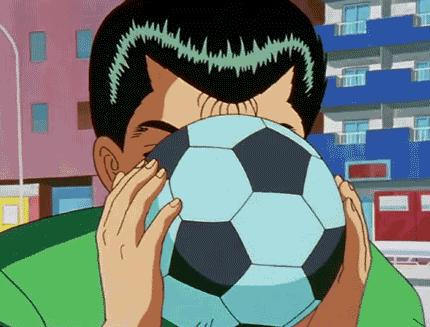

Yu Yu Hakusho follows Yusuke Urameshi, a 14-year-old street-brawling delinquent who, in an uncharacteristic act of altruism, is hit by a car and killed in an attempt to save a young boy by pushing him out of the way. His ghost is greeted by Botan, a woman who introduces herself as the pilot of the River Styx, who ferries souls to the "Underworld" or Spirit World (霊界 Reikai) where they may be judged for the afterlife. Botan informs Yusuke that his act had caught even the Underworld by surprise and that there was not yet a place made for him in either heaven or hell. Thus Koenma, son of the Underworld's ruler King Enma, offers Yusuke a chance to return to his body through a series of tests. Yusuke succeeds with the help of his friends Keiko Yukimura and Kazuma Kuwabara. After returning to life, Koenma grants Yusuke the title of "Underworld Detective" (霊界探偵 Reikai Tantei, lit. "Spirit World Detective"), charging him with investigating supernatural activity within the Human World (人間界 Ningen Kai). Soon Yusuke is off on his first case, retrieving three treasures stolen from the Underworld by a gang of demons: Hiei, Kurama and Goki. Yusuke collects the three treasures with the aid of his new technique, the "Rei Gun", a shot of aura or Reiki (霊気 Reiki, "Spirit Energy") fired mentally from his index finger. He then travels to the mountains in search of the aged, female martial arts master Genkai. Together with his rival Kuwabara, Yusuke fights through a tournament organized by Genkai to find her successor. Yusuke uses the competition as a cover to search for Rando, a demon who steals the techniques of martial arts masters and kills them. Yusuke defeats Rando in the final round of the tournament and trains with Genkai for several months, gaining more mastery over his aura. Yusuke is then sent to Labyrinth Castle in the Demon Plane (魔界 Makai, lit. "Demon World"), a third world occupied solely by demons, where Kuwabara and the newly reformed Kurama and Hiei assist him in defeating the Four Beasts, a quartet of demons attempting to blackmail Koenma into removing the barrier keeping them out of the human world.

Dark Tornement Arc
Yusuke's next case sends him on a rescue mission, where he meets Toguro, a human turned into a demon. In order to test his strength, Toguro invites Yusuke to the Dark Tournament (暗黒武術会 Ankoku Bujutsukai, "Dark Martial Arts Association"), an event put on by corrupt, rich humans in which teams of demons, and occasionally humans, fight fierce battles for the chance to receive any wish they desire. Team Urameshi, consisting of Yusuke, Kuwabara, Kurama, Hiei and a disguised Genkai, traverse through the strenuous early rounds to face Team Toguro in the finals and win the tournament. They learn that Team Toguro's owner, Sakyo, was attempting to win in order to create a large hole from the human world to the Demon Plane and allow countless demons through. With his loss, Sakyo destroys the tournament arena, killing himself in the process.
Demon/Raizen Arc
As they return to the human world, Yusuke is stripped of his detective title in fear that Yusuke's demon blood could cause him to go on a rampage in the human world. Yusuke, unsettled at having been controlled by his ancestor Raizen, accepts an offer by Raizen's followers to return to the Demon Plane. Raizen, desiring a successor to his territory, is on the brink of dying of starvation, a death that would topple the delicate political balance of the three ruling powers of the Demon Plane. Hiei and Kurama are summoned by the other two rulers, Mukuro and Yomi, respectively, to prepare for an inevitable war. The three protagonists train in the realm for one year, during which time Raizen dies and Yusuke inherits his territory. Yusuke takes initiative and proposes a fighting tournament to name the true ruler of the Demon Plane, which is agreed upon by Mukuro and Yomi. During the tournament, Yusuke and Yomi meet in the second elimination round where Yusuke is defeated. Yusuke hopes a similar competition will be held every so often to determine the Demon Plane's ruler. Yusuke stays in the Demon Plane for a while longer, but eventually returns to the human world and is reunited with his friends.